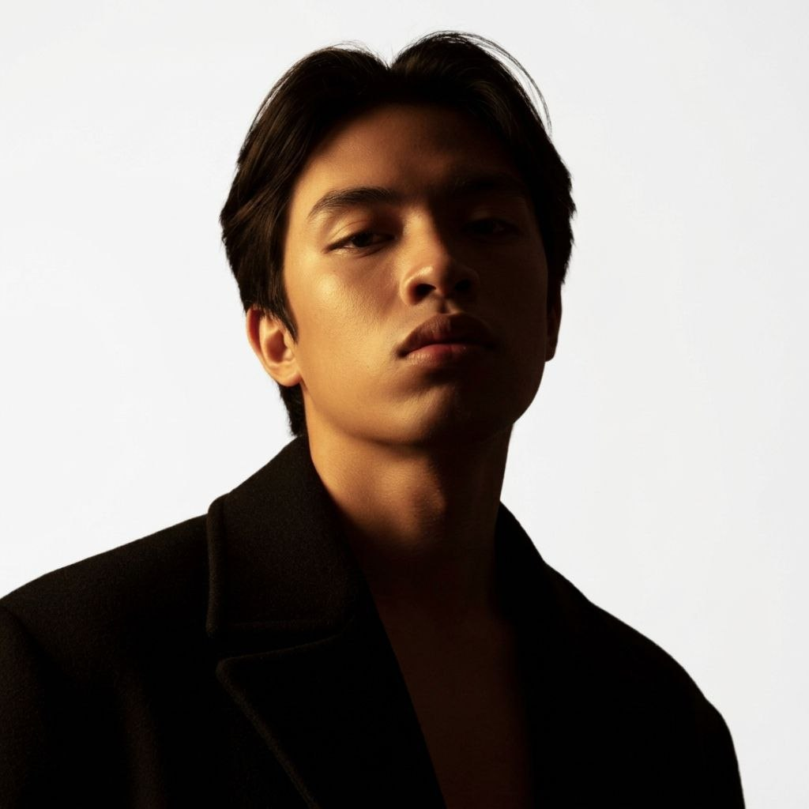
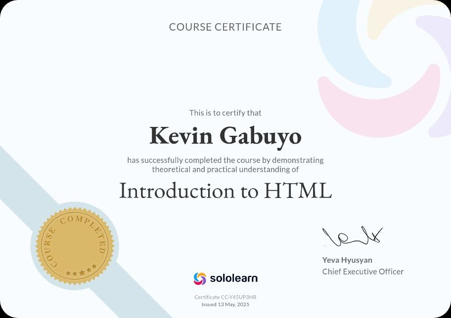
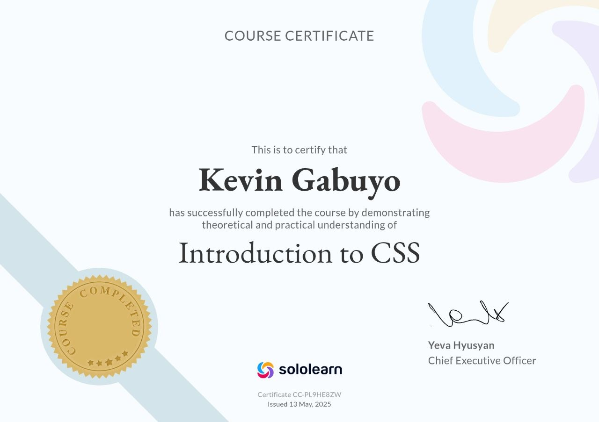
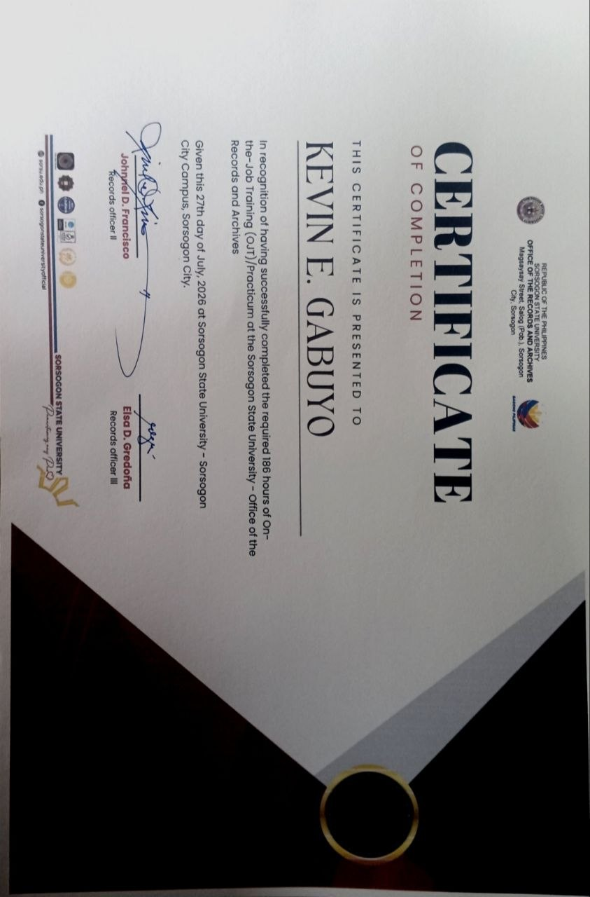

Hello, I'm
Sunrise watcher, gamer, and always learning. 🌄
Let's Connect
Hello, I'm Kevin Gabuyo, a 4th year Computer Science student. I only know a little about coding, but I'm learning more every day. When I'm not coding, I play online games, go to the riverside, watch the sunrise, and do many other things. I'm an ambivert, both an introvert and an extrovert, and I also like being alone sometimes. I can be caring, kind, and a giving person.
Spending time with family
Reading some mangas
Playing with friends online
Going outdoors, riverside, and watching the sunrise
Sorsogon State University – Bulan Campus
Currently a 4th year student. I work on projects in system analysis, front-end, and machine learning, and I completed 194 hours of On-the-Job Training at the SorSU Records Office.
Gubat National High School
General Academic Strand (GAS)
TaskMate Smart Planner combines a handwritten planner with digital convenience. Users keep writing by hand, then scan a QR code to sync notes, schedules, and reminders to their phone calendar (Google, Apple, or Outlook). It is made for busy students and professionals who love handwriting but need digital efficiency.
LokalFlow is a web-based system designed to help barangay officials manage resident information and issue barangay documents such as Clearance, Certificates, and Permits.



BS Computer Science, 4th Year • Sorsogon State University – Bulan Campus
📧 kevin.gabuyo@sorsu.edu.ph • 📍 Purok 2, Luna Candol St., Gubat, Sorsogon
A 4th year Computer Science student working on projects in system analysis, front-end, and machine learning. Caring, kind, and giving, and still learning more about coding every day.
SorSU Records Office – completed 194 hours of On-the-Job Training. (Certificate shown above.)
Bachelor of Science in Computer Science – Sorsogon State University – Bulan Campus (currently 4th year)
Senior High School, General Academic Strand (GAS) – Gubat National High School
Python (data analysis) • HTML (webpages) • CSS (layouts) • Front-end development
TaskMate Planner – a handwritten planner that syncs to phone calendars through a QR code.
LokalFlow – a web-based system for managing barangay resident information and issuing barangay documents.